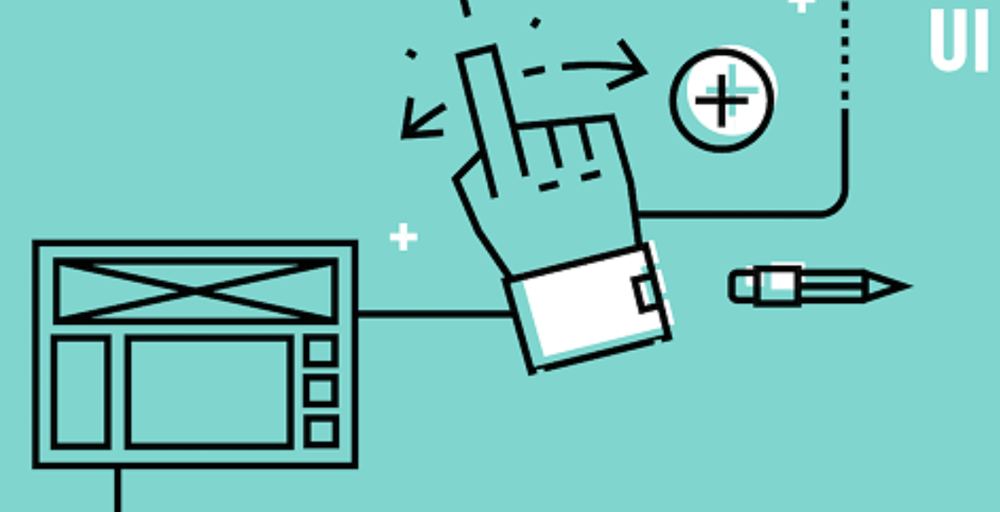
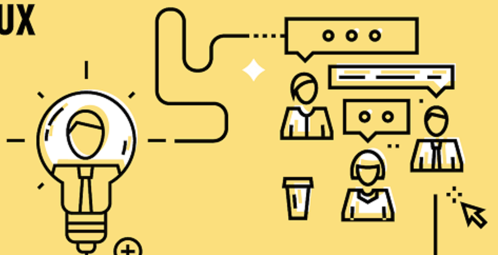

Introduction to UI and UX
Read on to learn what the terms “UX” and “UI” mean, which of the two areas of design are better paid, and how to become a UX designer or UI designer.


Introduction UI
User interface (UI) design is the process of making interfaces in software or computerized devices with a focus on looks or style...

Introduction UX
User experience (UX) design is the process design teams use to create products that provide meaningful and relevant experiences to users...
Different between UI and UX
UX Design refers to the term User Experience Design, while UI Design stands for User Interface Design...